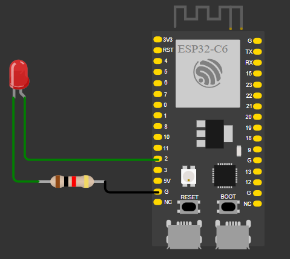

Lab 1-3 — RTOS Basics with ESP-IDF LAB
Purpose of the session:
The purpose of these labs 1-3 is to analyze changes in our code or new behaviors
Lab 1
1) Activity Goals
-
Implement a multitasking system in FreeRTOS using two concurrent tasks for LED control and serial message output.
-
Validate the effect of task priorities and task blocking on the behavior of the FreeRTOS scheduler, as well as the prevention of starvation through the use of vTaskDelay.
-
Document the source code, the results of the conducted experiments, and the observations obtained regarding concurrent task execution.
2) Exercises
- Priority experiment: change
hello_taskpriority from5to2. - Does behavior change? Why might it (or might it not)?
- Starvation demo:
temporarily remove vTaskDelay(...)fromhello_task. - What happens to blinking?
- Put the delay back and explain in one sentence why blocking helps.
3) Materials & Setup
BOM (bill of materials)
| # | Item | Qty | Link/Source | Cost (MXN) | Notes |
|---|---|---|---|---|---|
| 1 | ESP32 | 1 | amazon | $365 | Nothing |
| 2 | Led | 1 | Electronic store | $3 | Nothing |
Tools / Software
- OS/Env: ESP-IDF with FreeRTOS on ESP32 (Windows)
- Editors: VS Code with ESP-IDF extension, C/C++, Debug/Flash: ESP-IDF
Wiring / Safety
-
Board power: USB 5 V from host PC
-
LED: Onboard LED (GPIO 2)
-
Safety notes: Verify correct GPIO pin for the board; avoid short circuits during wiring
4) Procedure (what you did)
- Step 1: Create a new ESP-IDF project and configure the target ESP32 board
- Step 2: Implement two FreeRTOS tasks: one for LED blinking and one for serial logging
- Step 3: Build, flash, and monitor the application using ESP-IDF tools
- Step 4: Modify task priorities and observe scheduler behavior
- Step 5: Remove and restore vTaskDelay in one task to demonstrate * starvation and recovery
- Step 6: Verify correct LED blinking and periodic serial output
5) Data, Tests & Evidence
Test plan:
- Inputs: Task priorities, presence or absence of vTaskDelay
- Expected: Stable LED blinking and periodic log output when tasks are properly blocked
Tables/observations:
|Case|Configuration|LED Behavior|Serial Output|Pass|
|-------------|-----------|-------------|------------|-----------|
|A|Both tasks priority 5, delays enabled|Normal blinking|Periodic|
|B|hello_task priority 2, delays enabled|Normal blinking| Periodic|
|C|without vTaskDelay|Yes / unstable blinking|Continuous output|
|D|vTaskDelay restored|Normal blinking|Periodic|
6) Analysis
Observed behavior matches the expected FreeRTOS scheduling model.
When tasks use vTaskDelay, they enter the Blocked state, allowing the scheduler to execute other ready tasks regardless of priority differences
Removing vTaskDelay causes one task to continuously occupy the CPU, leading to starvation of the LED task.
This behavior illustrates the importance of cooperative blocking in real-time multitasking systems.
Proposed fixes: Ensure all tasks include appropriate blocking calls (vTaskDelay, queues, or synchronization primitives).
7) Code
#include <stdio.h>
#include "freertos/FreeRTOS.h"
#include "freertos/task.h"
#include "driver/gpio.h"
#include "esp_log.h"
#define LED_GPIO GPIO_NUM_2
static const char *TAG = "LAB1";
static void blink_task(void *pvParameters)
{
gpio_reset_pin(LED_GPIO);
gpio_set_direction(LED_GPIO, GPIO_MODE_OUTPUT);
while (1) {
gpio_set_level(LED_GPIO, 1);
vTaskDelay(pdMS_TO_TICKS(300));
gpio_set_level(LED_GPIO, 0);
vTaskDelay(pdMS_TO_TICKS(300));
}
}
static void hello_task(void *pvParameters)
{
int n = 0;
while (1) {
ESP_LOGI(TAG, "hello_task says hi, n=%d", n++);
vTaskDelay(pdMS_TO_TICKS(1000));
}
}
void app_main(void)
{
ESP_LOGI(TAG, "Starting Lab 1 (two tasks)");
// Stack size in ESP-IDF FreeRTOS is in BYTES
xTaskCreate(blink_task, "blink_task", 2048, NULL, 5, NULL);
xTaskCreate(hello_task, "hello_task", 2048, NULL, 5, NULL);
}
8) Files & Media
connection diagram:

Video:
Lab 2
1) Activity Goals
-
Implement inter-task communication in FreeRTOS using queues with a producer–consumer model.
-
Validate correct data transfer, task synchronization, and blocking behavior using xQueueSend and xQueueReceive.
-
Document the source code, experimental results, and observations related to queue-based task communication.
2) Exercises
- Make the producer faster: change producer delay
200ms → 20ms. - When do you see “Queue full”?
- Increase the queue length
5 → 20. - What changes?
- Make the consumer “slow”: after a successful receive, add:
- What pattern is happening now (buffering / backlog)?
3) Materials & Setup
BOM (bill of materials)
| # | Item | Qty | Link/Source | Cost (MXN) | Notes |
|---|---|---|---|---|---|
| 1 | ESP32 | 1 | amazon | $365 | Nothing |
Tools / Software
-
OS/Env: ESP-IDF with FreeRTOS on ESP32 (Windows)
-
Editors: VS Code with ESP-IDF extension, C/C++
-
Debug/Flash: ESP-IDF
Wiring / Safety
-
Board power: USB 5 V from host PC
-
LED: Onboard LED (GPIO 2)
-
Safety notes: Verify correct GPIO pin for the board; avoid short circuits during wiring
4) Procedure (what you did)
- Step 1: Create a new ESP-IDF project and configure the target ESP32 board
- Step 2: Create a FreeRTOS queue to store integer values
- Step 3: Implement a producer task that sends data to the queue using xQueueSend
- Step 4: Implement a consumer task that receives data from the queue using xQueueReceive
- Step 5: Build, flash, and monitor the application using ESP-IDF tools
- Step 6: Observe task behavior when the queue is full or empty and verify proper blocking
5) Data, Tests & Evidence
Test plan
-
Inputs: Queue length, send/receive delays, blocking timeouts
-
Expected: Reliable data transfer with tasks blocking when the queue is full or empty
Results:
Tables/observations
Case | Configuration | Queue Behavior | Task State | Pass?
A | Queue length 5, normal delays | Stable FIFO operation | Blocked/Ready |
B | Producer faster than consumer | Queue fills correctly | Producer blocked |
C | Consumer faster than producer | Queue empties correctly | Consumer blocked |
D | Balanced producer/consumer | Continuous data flow | Normal operation |
6) Analysis
Observed behavior matches the expected FreeRTOS queue model.
When xQueueSend or xQueueReceive is called with a blocking timeout, tasks enter the Blocked state until the queue condition is satisfied.
This prevents CPU starvation and allows efficient synchronization between producer and consumer tasks.
The experiment demonstrates how FreeRTOS queues provide both data transfer and task synchronization in real-time systems.
Proposed fixes: Use appropriate queue sizes and blocking times to ensure reliable and efficient inter-task communication.
7) Code
#include <stdio.h>
#include "freertos/FreeRTOS.h"
#include "freertos/task.h"
#include "freertos/queue.h"
#include "esp_log.h"
static const char *TAG = "LAB2";
static QueueHandle_t q_numbers;
static void producer_task(void *pvParameters)
{
int value = 0;
while (1) {
value++;
if (xQueueSend(q_numbers, &value, pdMS_TO_TICKS(50)) == pdPASS) {
ESP_LOGI(TAG, "Produced %d", value);
} else {
ESP_LOGW(TAG, "Queue full, dropped %d", value);
}
vTaskDelay(pdMS_TO_TICKS(200));
}
}
static void consumer_task(void *pvParameters)
{
int rx = 0;
while (1) {
// Wait up to 1000ms for data
if (xQueueReceive(q_numbers, &rx, pdMS_TO_TICKS(1000)) == pdPASS) {
ESP_LOGI(TAG, "Consumed %d", rx);
} else {
ESP_LOGW(TAG, "No data in 1s");
}
}
}
void app_main(void)
{
ESP_LOGI(TAG, "Starting Lab 2 (queue)");
q_numbers = xQueueCreate(5, sizeof(int));
if (q_numbers == NULL) {
ESP_LOGE(TAG, "Queue create failed");
return;
}
xTaskCreate(producer_task, "producer_task", 2048, NULL, 5, NULL);
xTaskCreate(consumer_task, "consumer_task", 2048, NULL, 5, NULL);
}
8) Files & Media
Video:
Lab 3
1) Activity Goals
- Implement task synchronization in FreeRTOS using binary semaphores and mutexes.
- Validate mutual exclusion and proper synchronization between concurrent tasks accessing shared resources.
- Document the source code, experimental results, and observations related to synchronization mechanisms in real-time systems.
2) Exercises
- Remove the mutex again. Do you ever see weird behavior?
- Change priorities: TaskA priority
6, TaskB priority4. - What do you expect and why?
- In one sentence: what does a mutex “guarantee”?
3) Materials & Setup
BOM (bill of materials)
| # | Item | Qty | Link/Source | Cost (MXN) | Notes |
|---|---|---|---|---|---|
| 1 | ESP32 | 1 | amazon | $365 | Nothing |
Tools / Software
OS/Env: ESP-IDF with FreeRTOS on ESP32 (Windows)
Editors: VS Code with ESP-IDF extension, C/C++
_Debug/Flash: ESP-IDF monitor and flashing tools
Wiring / Safety
Board power: USB 5 V from host PC
External hardware: None (serial monitor only)
Safety notes: Ensure stable USB connection during flashing and monitoring
4) Procedure (what you did)
Step 1: Create a new ESP-IDF project and configure the target ESP32 board
Step 2: Define a shared resource (e.g., a global counter or shared print section)
Step 3: Create a mutex using xSemaphoreCreateMutex to protect the shared resource
Step 4: Implement two or more tasks that attempt to access the shared resource concurrently
Step 5: Use xSemaphoreTake and xSemaphoreGive to enforce mutual exclusion
Step 6: Build, flash, and monitor the application using ESP-IDF tools
Step 7: Temporarily remove the mutex protection to observe race_ conditions and inconsistent behavior_
Step 8: Restore synchronization and verify stable and predictable execution
5) Data, Tests & Evidence
Test plan
Inputs: Presence or absence of mutex protection, task priorities
Expected: Consistent shared resource access when mutex is used; race conditions when not protected
Tables/observations
Case | Configuration | Shared Resource Behavior | System Stability | Pass?
A | Mutex enabled | Ordered and consistent access | Stable |
B | Mutex removed | Race condition observed | Inconsistent output |
C | Different task priorities with mutex | Correct mutual exclusion | Stable |
D | Binary semaphore for signaling | Proper task synchronization | Stable |
6) Analysis
Observed behavior confirms the importance of synchronization mechanisms in multitasking systems.
When a mutex is used, only one task at a time can access the shared resource, preventing race conditions and ensuring data integrity.
Without synchronization, concurrent access leads to unpredictable behavior due to simultaneous modifications of shared data.
Binary semaphores allow task signaling, while mutexes provide mutual exclusion with priority inheritance support.
The experiment demonstrates how proper synchronization is essential for reliability and determinism in real-time embedded systems.
Proposed fixes: Always protect shared resources with mutexes and use semaphores for task signaling to prevent race conditions and ensure system stability.
7) Code
Part A — Race demo (no mutex):
#include <stdio.h>
#include "freertos/FreeRTOS.h"
#include "freertos/task.h"
#include "esp_log.h"
static const char *TAG = "LAB3A";
static volatile int shared_counter = 0;
static void increment_task(void *pvParameters)
{
const char *name = (const char *)pvParameters;
while (1) {
// NOT safe: read-modify-write without protection
int local = shared_counter;
local++;
shared_counter = local;
if ((shared_counter % 1000) == 0) {
ESP_LOGI(TAG, "%s sees counter=%d", name, shared_counter);
}
vTaskDelay(pdMS_TO_TICKS(1));
}
}
void app_main(void)
{
ESP_LOGI(TAG, "Starting Lab 3A (race demo)");
xTaskCreate(increment_task, "incA", 2048, "TaskA", 5, NULL);
xTaskCreate(increment_task, "incB", 2048, "TaskB", 5, NULL);
}
#include <stdio.h>
#include "freertos/FreeRTOS.h"
#include "freertos/task.h"
#include "freertos/semphr.h"
#include "esp_log.h"
static const char *TAG = "LAB3B";
static volatile int shared_counter = 0;
static SemaphoreHandle_t counter_mutex;
static void increment_task(void *pvParameters)
{
const char *name = (const char *)pvParameters;
while (1) {
xSemaphoreTake(counter_mutex, portMAX_DELAY);
int local = shared_counter;
local++;
shared_counter = local;
xSemaphoreGive(counter_mutex);
if ((shared_counter % 1000) == 0) {
ESP_LOGI(TAG, "%s sees counter=%d", name, shared_counter);
}
vTaskDelay(pdMS_TO_TICKS(1));
}
}
void app_main(void)
{
ESP_LOGI(TAG, "Starting Lab 3B (mutex fix)");
counter_mutex = xSemaphoreCreateMutex();
if (counter_mutex == NULL) {
ESP_LOGE(TAG, "Mutex create failed");
return;
}
xTaskCreate(increment_task, "incA", 2048, "TaskA", 5, NULL);
xTaskCreate(increment_task, "incB", 2048, "TaskB", 5, NULL);
}
8) Files & Media
Video: